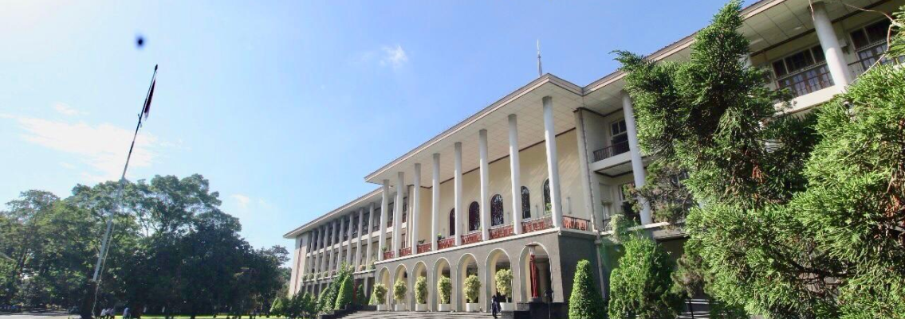

Semua Tentang
SMA Negeri 2 Medan

Era globalisasi dengan segala implikasinya menjadi salah satu pemicu cepatnya perubahan yang terjadi pada berbagai aspek kehidupan masyarakat, dan bila tidak ada upaya sungguh-sungguh untuk mengantisipasinya maka hal tersebut akan menjadi masalah yang sangat serius. Dalam hal ini dunia pendidikan mempunyai tanggung jawab yang besar, terutama dalam menyiapkan sumber daya manusia yang tangguh sehingga mampu hidup selaras didalam perubahan itu sendiri.
Pendidikan merupakan investasi jangka panjang yang hasilnya tidak dapat dilihat dan dirasakan secara instan, sehingga sekolah sebagai ujung tombak dilapangan harus memiliki arah pengembangan jangka panjang dengan tahapan pencapaiannya yang jelas dan tetap mengakomodir tuntutan permasalahan faktual kekinian yang ada di masyarakat.
Visi
“ Terwujudnya warga sekolah berakhlak mulia, disiplin, berdaya saing, dan mencintai lingkungan ”
Misi
1. Meningkatkan keimanan dan ketaqwaan dengan mengoptimalkan kegiatan keagamaan di sekolah.
2. Meningkatkan budaya disiplin dan tanggungjawab seluruh elemen sekolah.
3. Meningkatkan kualitas Sumber Daya Manusia (SDM) dalam kegiatan pembelajaran yang terintegrasi nilai kepramukaan.
4. Meningkatkan kualitas dan kuantitas sarana dan prasarana sekolah.
5. Meningkatkan kesadaran dalam pengelolaan dan pelestarian lingkungan sekolah yang hijau, bersih, nyaman, dan terawat.
6. Meningkatkan kemampuan akademik dan bakat yang sesuai dengan kebutuhan siswa pada konteks global.
7. Meningkatkan pelayanan bimbingan dan konseling kepada peserta didik secara intensif.
8. Meningkatkan jumlah lulusan yang melanjutkan ke perguruan tinggi negeri terbaik.
9. Meningkatkan hubungan baik dengan unsur staekholder dalam pengembangan sekolah.
87
Prestasi
87
Prestasi
87
Prestasi